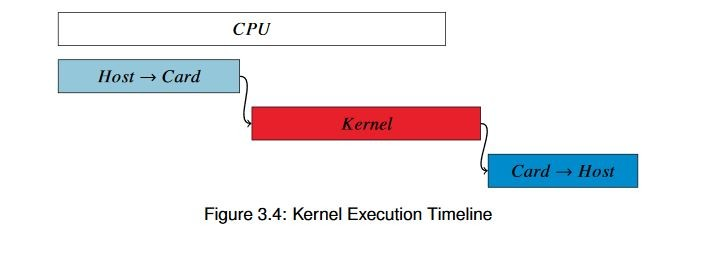

2020.2 Vitis ™ - ランタイムおよびシステムの最適化xilinx.com の Vitis ™開発環境を参照 |
概要¶
全体的なシステム スループットは大きく改善しましたが、ボトルネックがアクセラレータ自体であることが明らかになりました。 デザインの最適化には 2 つの方法があることを思い出してください。アムダールの法則に従って演算をより高速に実行するためにリソースを投入する方法と、グスタフソンの法則に従って基本的な操作を並列処理する方法です。
ここでは、アムダールの法則に従って最適化してみましょう。ここまでは、アクセラレータは CPU と同じアルゴリズムに従って、クロックごとに 32 ビットの加算を 1 回実行していました。 ただし、CPU クロックははるかに高速なので (しかも PCIe 上でデータを転送する必要がない)、CPU のほうがスピードでは勝っていました。 これを逆転させてみましょう。
DDR コントローラーのには 512 ビット幅のインターフェイスが含まれています。 アクセラレータでデータフローを並列処理すると、1 クロックごとに 1 個の配列要素ではなく、16 個の配列要素を処理できます。つまり、入力をベクター化するだけで、スピードを 16 倍にすることが可能です。
キー コード¶
この例で、引き続きホスト ソフトウェアに焦点を置き、カーネルをブラック ボックスとして処理すると、例 3 のコードと実質的に同じコードになります。 必要なのは、カーネル名を vadd から wide_vadd に変更することだけです。
コードが同じなので、XRT および OpenCL のメモリを操作する別の概念を紹介しましょう。 Alveo データセンター アクセラレータ カードには、使用可能なメモリ バンクが 4 つあります。これらの単純なアクセラレータでは必ずしも必要ではありませんが、各インターフェイスで使用可能な帯域幅を最大にするため、操作をこれらのアクセラレータに均等に分散するのが望ましい場合があります。 この単純なベクター加算例では、次の図に示すトポロジを使用しています。

このようにすると、異なる外部メモリ バンクを使用して、広帯域幅のトランザクション同時に実行できるようになります。 短い読み出しおよび書き込みを何回も実行するより、長いバーストを実行する方が良いパフォーマンスが得られますが、同じメモリで 2 つの操作を同時に実行することは根本的には不可能です。
コマンド ライン オプションを使用してハードウェアの接続性を指定することは簡単ですが、実際にハードウェアにバッファーを転送するには、XRT にどのメモリを使用するかを指定する必要があります。 ザイリンクスでは、標準 OpenCL ライブラリを拡張することにより、バッファー割り当てのフラグ CL_MEM_EXT_PTR_XILINX を構造体 cl_mem_ext_ptr_t と組み合わせて使用します。 これは次のようになります。
// Declare physical memory bank connectivity
cl_mem_ext_ptr_t bank1_ext, bank2_ext;
bank2_ext.flags = 2 | XCL_MEM_TOPOLOGY;
bank2_ext.obj = NULL;
bank2_ext.param = 0;
bank1_ext.flags = 1 | XCL_MEM_TOPOLOGY;
bank1_ext.obj = NULL;
bank1_ext.param = 0;
// Allocate buffers
cl::Buffer a_buf(context,
static_cast<cl_mem_flags>(CL_MEM_READ_ONLY |
CL_MEM_EXT_PTR_XILINX),
BUFSIZE*sizeof(uint32_t),
&bank1_ext,
NULL);
cl::Bufferb_buf(context,
static_cast<cl_mem_flags>(CL_MEM_READ_ONLY |
CL_MEM_EXT_PTR_XILINX),
BUFSIZE*sizeof(uint32_t),
&bank2_ext,
NULL);
cl::Buffer c_buf(context,
static_cast<cl_mem_flags>(CL_MEM_READ_WRITE |
CL_MEM_EXT_PTR_XILINX),
BUFSIZE*sizeof(uint32_t),
&bank1_ext,
NULL);
このコードは前の例とよく似ていますが、cl_mem_ext_ptr_t オブジェクトを cl::Buffer コンストラクターに渡している点と、flags フィールドを使用して特定バッファーにどのメモリ バンクを使用するのかを指定している点が異なります。 このような単純な例でこのようにする必要はありませんが、この例は前の例と構造的に非常によく似ているので、この方法を学ぶのによい機会です。これは、ワークロードの大きいシステムでパフォーマンスを最適化するのに非常に有益な手法となることがあります。
wide_vadd カーネルに変更したことと、バッファーのサイズを 1 に増やしたことを除けば、コードは同じです。 この変更は、ハードウェアとソフトウェアの違いを強調するために加えられています。
アプリケーションの実行¶
XRT ランタイムが初期化されたら、ビルド ディレクトリから次のコマンドを実行してアプリケーションを実行します。
./04_wide_vadd alveo_examples
プログラムにより、次のようなメッセージが表示されます。
-- Example 4: Parallelizing the Data Path --
Loading XCLBin to program the Alveo board:
Found Platform
Platform Name: Xilinx
XCLBIN File Name: alveo_examples
INFO: Importing ./alveo_examples.xclbin
Loading: './alveo_examples.xclbin'
Running kernel test XRT-allocated buffers and wide data path:
OCL-mapped contiguous buffer example complete!
--------------- Key execution times ---------------
OpenCL Initialization: 244.463 ms
Allocate contiguous OpenCL buffers: 37.903 ms
Map buffers to userspace pointers: 0.333 ms
Populating buffer inputs: 30.033 ms
Software VADD run : 21.489 ms
Memory object migration enqueue : 4.639 ms
Set kernel arguments: 0.012 ms
OCL Enqueue task: 0.090 ms
Wait for kernel to complete : 9.003 ms
Read back computation results : 2.197 ms
| 操作| 例 3| 例 4| Δ3→4 |———-|:———-:|:———-:|:———-: | OCL の初期化| 247.460 ms| 244.463 ms| - | バッファーの割り当て| 30.365 ms| 37.903 ms| 7.538 ms | バッファーへの値の挿入| 22.527 ms| 30.033 ms| 7.506 ms | ソフトウェア VADD| 24.852 ms| 21.489 ms| -3.363 ms | バッファーのマップ| 222 µs| 333 µs| - | バッファーの書き出し| 66.739 ms| 4.639 ms| - | カーネル引数の設定| 14 µs| 12 µs| - | カーネルの実行時間| 92.068 ms| 9.003 ms| -83.065 ms | バッファーの読み込み| 2.243 ms| 2.197 ms| - | ΔAlveo→CPU| -323.996 ms| -247.892 ms| -76.104 ms | ΔFPGA→CPU (アルゴリズムのみ)| -76.536 ms| 5.548 ms| -82.084 ms
CPU よりも速いスピードを達成できました。
ただし、注意すべき点がいくつかあります。 まず、データを FPGA との間で転送するのに必要な時間は変わっていません。 これまでのセクションで説明したように、この時間は、メモリ トポロジ、データ量、システム全体のメモリ帯域幅の使用に基づいて一定になります。 特にクラウド データセンターなどの仮想化された環境では、実行ごとに若干の変動が見られますが、実行時間が固定された操作とみなすことができます。
興味深いのは、達成された高速化の量です。 クロックごとのデータパス幅を 16 ワードに広げても、16 倍の高速化が得られるわけではありません。 カーネルではクロックごとに 16 ワード処理されていますが、タイミング結果を見ると、外部 DDR レイテンシが累積されているのがわかります。 各インターフェイスはデータをバースト入力して処理し、それをバースト出力しますが、 DDR とのやりとりでレイテンシが発生するため、実際には 1 ワードのインプリメンテーションと比較して 10 倍の高速化しか達成できていません。
ベクター加算は簡単すぎるので、根本的な問題に直面してしまっています。 vadd の演算は O(N) ですが、非常に単純な O(N) です。 その結果、演算ではなく I/O の帯域幅が制限となります。 O(Nx) である入れ子のループや、O(N) アルゴリズムであっても計算量の多いフィルターなどであれば、メモリにそれほど頻繁にアクセスせずに、FPGA ファブリック内で大量の計算が実行されるので、大幅なアクセラレーションを達成できます。 アクセラレーションに最適なアルゴリズムは、データ転送がほとんどなく、計算量が非常に多いものです。
ここで、より大型のバッファーを使用してみましょう。 バッファーサイズを次のように変更します。
#define BUFSIZE (1024*1024*256)// 256*sizeof(uint32_t) = 1 GiB
これを再ビルドして実行し、その結果をメトリクスを少なくした次の表に示します。 これまでの演習で OpenCL 初期化については理解できていると思うので、ここではアルゴリズムのパフォーマンスのみを比較します。 この初期化時間が重要ではないということではありませんが、これが初期化操作中に 1 回だけ実行されるようにアプリケーションを構築するべきです。
バッファーの割り当ておよび初期化にかかる時間も示しません。 これらも、アプリケーションの設定中に実行すべき操作です。 アプリケーションのクリティカル パスに大型のバッファーを割り当てるのが習慣となっているのであれば、ハードウェア アクセラレーションを適用しようとするよりは、そのアプリケーションの構造を考え直す方が効率的です。
| 操作| 例 4 |———-|:———-: | ソフトウェア VADD| 820.596 ms | バッファー PCIe TX| 383.907 ms | VADD カーネル| 484.050 ms | バッファー PCIe RX| 316.825 ms | ハードウェア VADD (合計)| 1184.897 ms | ΔAlveo→CPU| 364.186 ms
これまでうまくいっていたのに、それが台無しになってしまいました。 この大型バッファーでは、CPU のスピードを上回ることがまったくできていません。 何が起きたのでしょうか。
結果の値をよく見てみると、ハードウェア カーネルはかなり効率よくデータを処理していますが、FPGA とのデータ転送に時間が取られています。 全体的な実行のタイムラインを描くと、図 3.4 のようになります。

この図は厳密なものではありませんが、相対的な関係を示しています。 結果を詳しく見ると、CPU のスピードを上回るには、カーネル全体を約 120 ms で完了するよう実行する必要があります。 それを実現するには、4 倍のスピードで実行してクロックごとに処理するデータ量を 4 倍に増やすか、4 つのアクセラレータを並列実行する必要があります。どちらを選択すべきでしょうか。 それを次の例で見てみます。
追加演習¶
この演習に、追加で次のことを試してみてください。
バッファーのサイズを変えてみます。 CPU のほうが速くなる点を見つけられますか。
Vitis タイムライン トレースを記録して確認してみます。 この手順は、Vitis の資料を参照してください。
学習ポイント¶
カーネルで並列処理を使用すると非常に良い結果が得られる可能性はありますが、データ転送が実行時間の大部分を占めないようにする必要があります。 データ転送に時間がかっている場合は、目標の実行時間を超えないようにします。
単純な計算は、ほかのタスクを実行するためにプロセッサを解放しようとしているのでなければ、必ずしもアクセラレーションに適しているとは言えません。 アクセラレーションに適しているのは、特に入れ子のループのような O(Nx) アルゴリズムなど、複雑でワークロードの大きいアゴリズムです。
処理を開始する前にすべてのデータが転送されるまで待機する必要がある場合は、カーネルが非常に最適化されていても、全体的なパフォーマンスターゲットを達成できない可能性があります。
データパスを並列処理するだけでは十分ではないことがわかったので、 データ転送にかかる時間を短縮する方法を見てみます。
Copyright© 2019-2021 Xilinx
この資料は 2021 年 1 月 22 日時点の表記バージョンの英語版を翻訳したもので、内容に相違が生じる場合には原文を優先します。資料によっては英語版の更新に対応していないものがあります。 日本語版は参考用としてご使用の上、最新情報につきましては、必ず最新英語版をご参照ください。